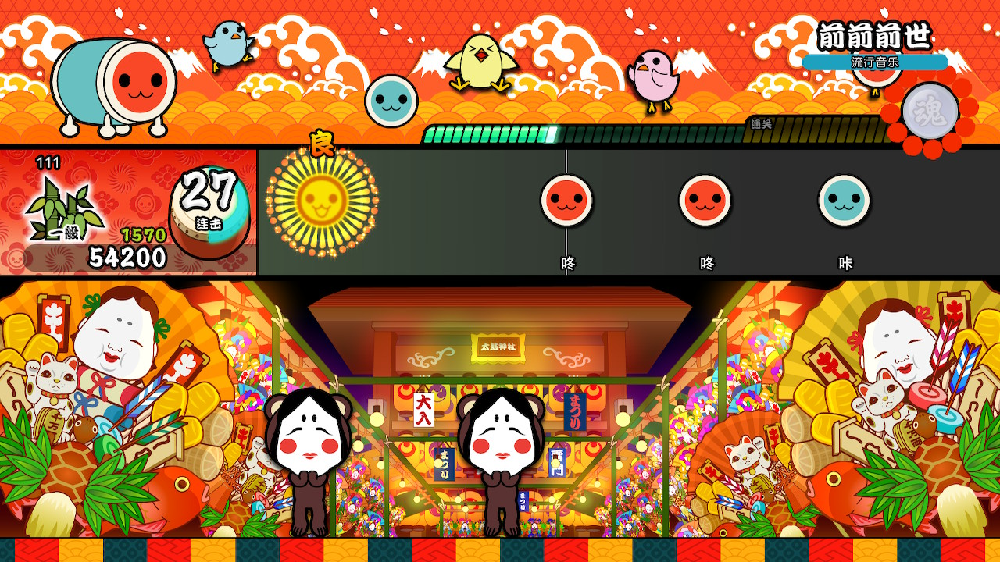
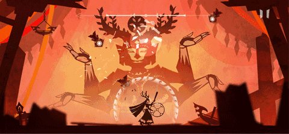
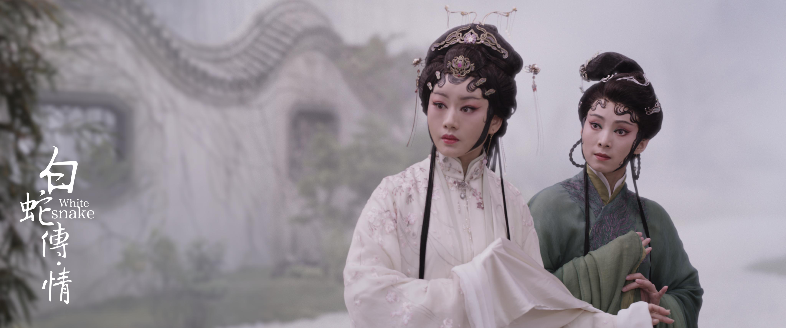
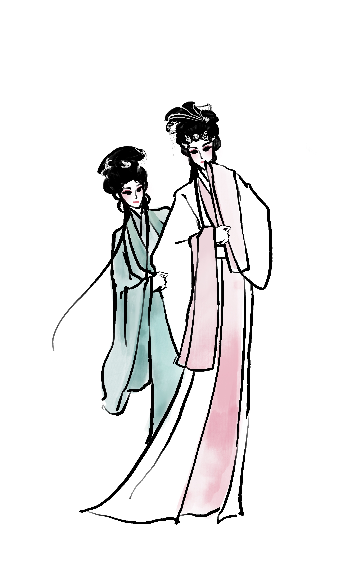
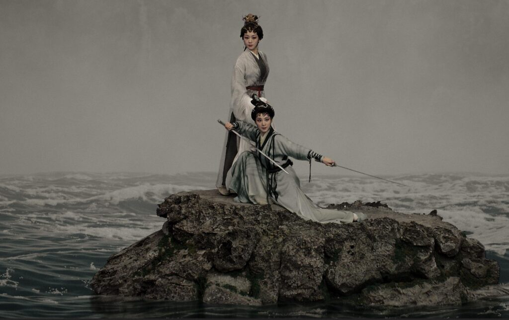
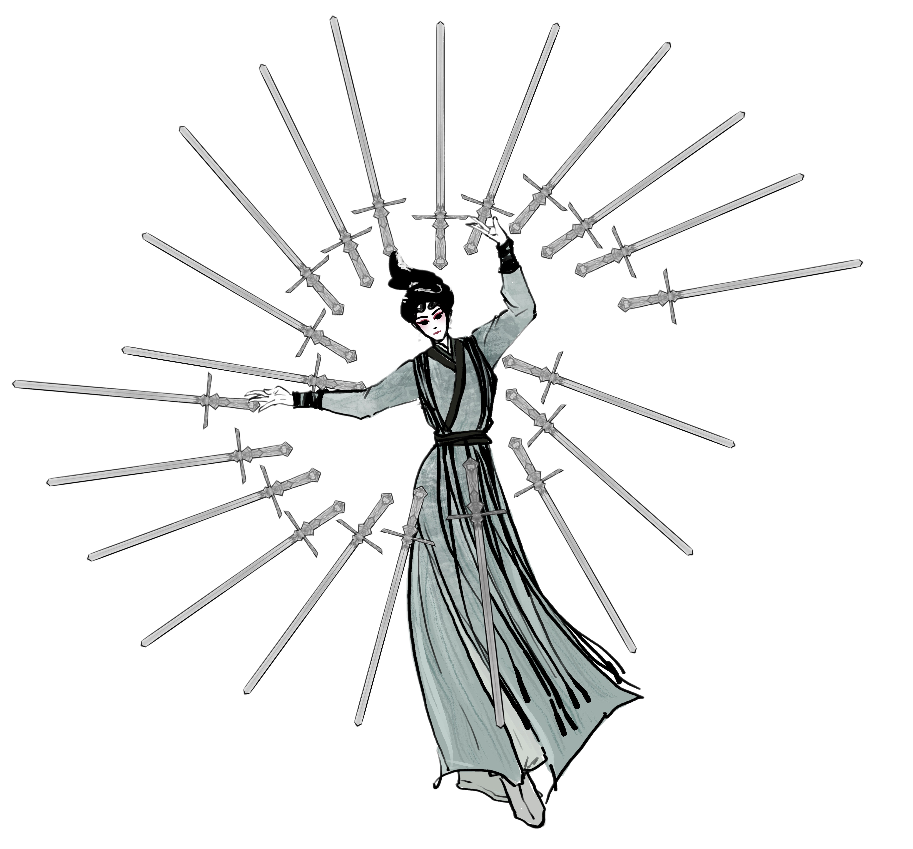
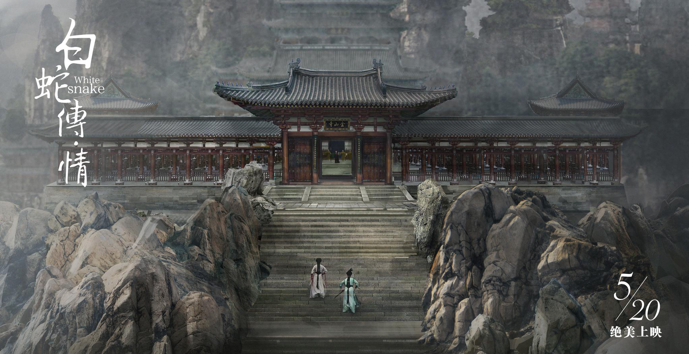
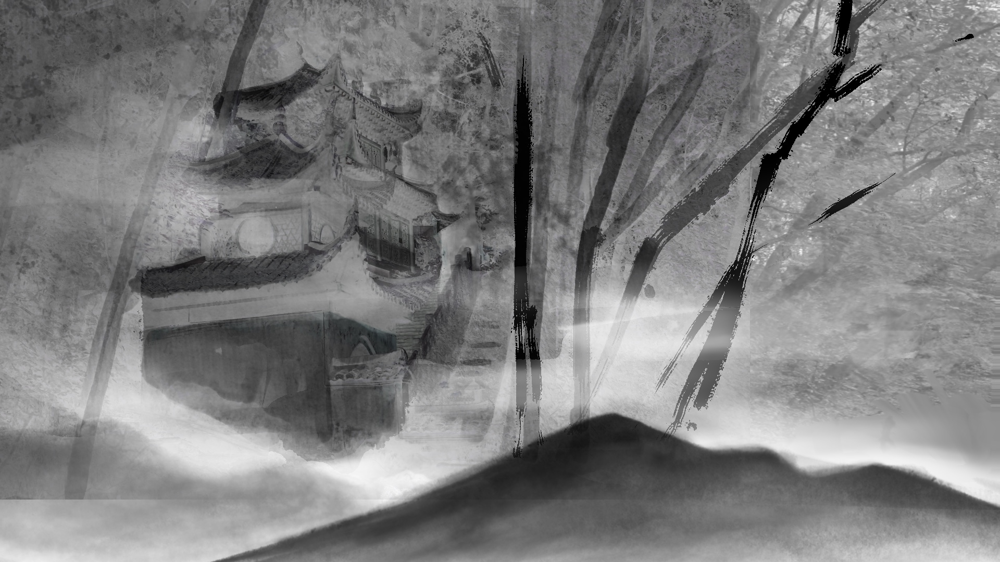

Problem问题
Players unfamiliar with Cantonese opera may need an introduction to its stories, vocal styles, and performance conventions. 对于不熟悉粤剧的玩家，它的故事、唱腔与表演方式都需要一个亲近的入口。
A traditional Chinese story told through music and play. 在音乐与游玩中，走进中国传统故事。
A Cantonese Opera Narrative Rhythm Game 一款粤剧题材叙事节奏游戏
Follow Bai Suzhen and Xu Xian from their meeting at West Lake to the battle at Jinshan Temple, playing through two acts of love and conflict. 从西湖相遇到金山寺之战，跟随白素贞与许仙，在两个可玩篇章中经历相爱与冲突。
Project Introduction项目介绍
Based on The Legend of the White Snake, the game follows Bai Suzhen, a snake spirit, and Xu Xian, a human, from their meeting at West Lake’s Broken Bridge to the conflict at Jinshan Temple. 游戏以《白蛇传》为背景，讲述蛇妖白素贞与凡人许仙的故事，从西湖断桥的相遇，推进到金山寺的冲突。
Two playable acts move from a romantic encounter to a battle against the monk Fahai. Players tap along with opera vocals and drum rhythms, following the characters’ changing emotions through the music and story. 两个可玩章节从相遇时的情感递进，转向对抗法海的战斗。玩家跟随粤剧唱腔与鼓点进行节奏操作，在音乐与剧情中感受人物的情感变化。
I want to share Chinese traditional culture through games, with players across cultures as well as younger generations. 我希望通过游戏，把中国传统文化介绍给不同文化背景的玩家，也让年轻一代有新的方式亲近它。
Players unfamiliar with Cantonese opera may need an introduction to its stories, vocal styles, and performance conventions. 对于不熟悉粤剧的玩家，它的故事、唱腔与表演方式都需要一个亲近的入口。
How can playing along with music help someone connect with an unfamiliar cultural story? 如何让玩家通过跟随音乐操作，与一个陌生文化中的故事建立联系？
Let players participate in the encounter and conflict through rhythm-based tapping gameplay, while hearing Cantonese opera’s melodies and distinctive vocals. 让玩家通过节奏打击玩法参与相遇与对抗，同时聆听粤剧的旋律与独特唱腔。
I referred to Cantonese Opera performances for the story, music, costumes, makeup, and character styling.故事与音乐来自粤剧题材，人物服装、妆容与造型也参考粤剧原本的舞台装造。

Reference game · Taiko no Tatsujin参考作品 · 太鼓达人
Act I was inspired by Taiko no Tatsujin. Notes appear beside the two protagonists and converge at the central judgement area.第一幕参考了《太鼓达人》，音符从两位主人公身旁出现，向中央判定区汇拢。

Reference game · Nishan Shaman参考作品 · 尼山萨满
Act II draws on Nishan Shaman for its boss battle, where rhythm hits break the shield around Fahai.第二幕 Boss 战参考了《尼山萨满》，玩家通过节奏命中打破法海的护盾。
Gameplay & Story玩法与叙事
Act I follows the music toward a meeting. Act II uses rhythm to fight Fahai.第一幕跟随音乐推进两人相遇，第二幕用节奏操作对抗法海。
Opening开场
Introduce the story of White Snake.引入白蛇故事，进入游戏。
Story scene剧情过场
Lead into Bai Suzhen and Xu Xian’s meeting.铺垫白素贞与许仙的相遇。
Playable · Act I可玩关卡 · 第一幕
Follow the rhythm as two hearts draw closer.跟随节奏，感受两颗真心逐渐靠近。
Story scene剧情过场
Their love faces the divide between human and spirit.从相恋走向“人妖殊途”的阻碍。
Playable · Act II可玩关卡 · 第二幕
Break Fahai’s shield through rhythm hits.通过节奏命中，击破法海的护盾。
Ending结尾
Return from the battle to the story.战斗结束，回到故事的收束。
ACT I第一幕
Bai Suzhen and Xu Xian approach from opposite ends of the bridge and meet in the middle.白素贞与许仙从桥的两头逐渐靠近，最终在桥中间相遇。
Players follow the music and time their inputs as notes appear beside both characters and converge at the central judgement area.玩家跟随音乐输入，音符从两位主人公身旁出现，向中央判定区汇拢。
The converging notes mirror two hearts drawing closer. As the characters approach each other, affection grows between them, and they finally come together.双向汇聚的音符也象征着两颗真心逐渐靠近。随着两人的距离缩短，他们逐渐互生情谊，最终走到了一起。
ACT II第二幕
I wanted Act II to feel like a boss battle with a clear goal: defeat Fahai and rescue Xu Xian. Bai Suzhen and Xiaoqing fight together at Jinshan Temple. The conflict comes from the opposition to Bai Suzhen and Xu Xian’s love because she is a spirit and he is human.我希望第二幕有打 Boss 的感觉，目标很明确：打败法海，救出许仙。白素贞与小青一起在金山寺对抗法海，冲突来自白素贞与许仙的相恋受到“人妖殊途”的阻碍。
Players time their inputs to the music as Bai Suzhen and Xiaoqing fight Fahai. His shield was inspired by Nishan Shaman and represents his remaining health, which is also shown by the health bar above. Successful hits reduce both the shield and the health bar together. Misses do not reduce the player’s health.玩家跟随音乐输入，参与白素贞与小青对抗法海的战斗。法海周围的护盾参考了《尼山萨满》，与上方血条共同表现他的剩余生命值。命中时，护盾与血条同步减少。Miss 不扣玩家血量。
Act I uses converging notes to express a growing connection. Act II gives each successful input an offensive role, turning the musical interaction into a confrontation. Character movement follows the timeline, while rhythm judgements determine damage.第一幕用汇聚的音符表达两人逐渐靠近；第二幕则赋予命中攻击的作用，让音乐互动转为对抗。角色按时间线移动，节奏判定决定伤害，营造 Boss 战的感觉。
Art Direction美术设计
Art style & character design developed together with C.J.Q. All game art assets illustrated by C.J.Q.美术风格与人物设计由我和 C.J.Q 共同讨论确定；全部游戏美术素材由 C.J.Q 绘制。
C.J.Q and I discussed the art style and character designs, using the Cantonese opera film White Snake (白蛇传·情) as a visual reference. C.J.Q illustrated all game art assets. The comparisons below show the film references alongside the resulting artwork.我与 C.J.Q 以粤剧电影《白蛇传·情》为参考，共同讨论美术风格与人物设计，再由 C.J.Q 绘制全部游戏美术素材。下面将电影参考与完成的画稿放在一起对照。
In our design discussions, we chose to retain the costumes, pink and green palette, and long water sleeves as recognizable opera features. We aimed to preserve the restrained, flowing quality of the film costumes while simplifying the hairstyles and smaller details.我们在讨论中决定保留服装、浅粉与青绿的配色，以及水袖等戏曲人物特征，延续电影服装中简约、飘逸的感觉，同时适当简化发型与细节。


The combat reference shows a different costume and a sword pose. The game artwork gives Xiaoqing a separate battle appearance, with green robes and swords arranged around her.战斗参考中，服装和持剑姿态与日常场景不同。游戏里的小青也有单独的战斗造型，身穿青绿色衣服，周围排列剑阵。


The Act II background, illustrated by C.J.Q, retains the centrally placed temple entrance, symmetrical composition, and foreground rocks from the film reference. Our discussions also addressed its hazy atmosphere. Mist and muted gray tones give the setting the supernatural quality of a world of spirits and legend.由 C.J.Q 绘制的第二幕金山寺场景保留了电影参考中居中的寺门、对称布局与前景山石。我们也讨论了如何还原电影的朦胧感，通过云雾与灰蒙蒙的色调，营造传说中人妖共存的志怪氛围。


Development & Iteration开发与迭代
The project moved from rhythm prototype to Unity implementation, then toward clearer visual layering and playable storytelling. 项目从节奏原型推进到 Unity 实现，再逐步优化视觉层级与可玩的叙事结构。
I built the rhythm interaction in Unity, then used it for the bridge encounter and the boss battle. Each act connects the rhythm input to its own story scene.我在 Unity 中实现节奏操作，再分别用于桥上相遇和 Boss 战，让每幕的操作对应它的剧情。
A friend who playtested the game felt that waiting for every line to appear through the typewriter effect took too long.朋友试玩后反馈，逐字显示文字的效果需要等待太久，影响了阅读剧情的节奏。
Change修改I added a click-to-reveal option that immediately shows the full text of the current passage. It only skips the text animation; the music continues without fast-forwarding.我加入了点击显示当前段落全文的功能。点击只跳过文字逐字出现的动画，音乐仍然连续播放，不会随之快进。
Design trade-off设计取舍Storytelling and rhythm-based tapping gameplay are equally important to this project. I kept the background text needed to understand the characters and story, while letting players reveal and read it more quickly instead of waiting for the animation.剧情叙事与节奏打击玩法在这个项目中同样重要。我保留了理解人物与故事发展所需的背景文字，同时让玩家可以直接展开全文、加快阅读，减少等待文字动画的时间。
The judgement area began as a simple circle marking where to hit. It later became a lotus shape, but still lacked the visual feedback I wanted for each input.最初的判定区只是一个圆圈，告诉玩家在哪里命中。后来我将它改成莲花形状，但每次操作的视觉反馈仍然不够明显。
Iteration逐步调整I added a dark lotus target so players could see when the note fully overlapped it, followed by Good, Perfect, and Miss labels. Particle bursts on Good and Perfect hits added another layer of feedback.我进一步加入深色莲花判定目标，让玩家看清音符与目标完全重合的时机，再加上 Good、Perfect、Miss 文字提示，并在 Good 和 Perfect 命中时加入粒子散开的效果。
Design intent调整目的Together, the target, labels, and particles make the timing and result more visible, giving each tap a stronger sense of impact.判定目标、文字与粒子共同强化了命中时机和结果的呈现，让每次节奏操作更有打击感。
Position-based judgement became inaccurate when notes had to follow animated characters.音符需要跟随移动中的角色，单靠屏幕位置判断命中会不准确。
Solution修改I redesigned the logic around expected arrival time instead of only screen position.我改用音符预计到达判定区的时间进行判定，不再只看屏幕位置。
Impact结果Music, animation, and narrative timing stayed synchronized.这样可以让音符判定与音乐、动画和剧情时间线保持同步。
The early chart did not line up well with the music when played. Cantonese Opera has many vocal turns and ornaments, and following too many of them made the notes dense and hard to read. A friend and I repeatedly checked and adjusted the timing. I also removed some notes and kept mainly the stronger accents, making the chart less crowded while bringing the inputs closer to the music.早期谱面实际按起来和音乐对不上。粤剧转音很多，一开始我放了太多音符，画面很密，玩家不容易看清。我和朋友反复试听、试玩，校准音符时间；后来又删掉一部分音符，主要保留重音，才逐渐把谱面整理好。
Notes were sometimes hidden behind background effects, subtitles, characters, or UI elements.音符有时会被背景特效、字幕、角色或界面遮住。
Solution修改A dedicated camera renders the note layer above other visual elements.我用单独的摄像机渲染音符层，让音符显示在其他画面元素上方。
Impact结果The rhythm interface remained clear during visually complex scenes.画面元素较多时，玩家仍然能看清音符。
The hardest part was balancing the emotional meaning of the original opera with an experience that new players could read and play. Working on the note chart made that balance concrete: following too many vocal ornaments crowded the screen, so I reduced the notes and focused on stronger accents.开发中最难的是在保留原作情感的同时，让新玩家能够看懂并参与。谱面制作让我具体面对了这个取舍：跟随过多转音会让音符挤满画面，因此我减少音符、保留较强的重音，在音乐表达与操作可读性之间寻找平衡。
Future Outlook未来展望
Improve rhythm feedback and transitions between story scenes and playable acts, making the experience feel more continuous.优化节奏反馈与剧情、可玩章节之间的转场，让整体体验更加连贯。
Expand the story with chapters such as Stealing the Immortal Herb, Broken Bridge Reunion, and Leifeng Pagoda.扩展盗仙草、断桥重逢、雷峰塔等故事章节。
Add an opera archive with character notes and introductions to the music and performance traditions, giving unfamiliar players more context.增加戏曲档案，介绍角色、音乐与表演知识，为不熟悉粤剧的玩家补充背景。